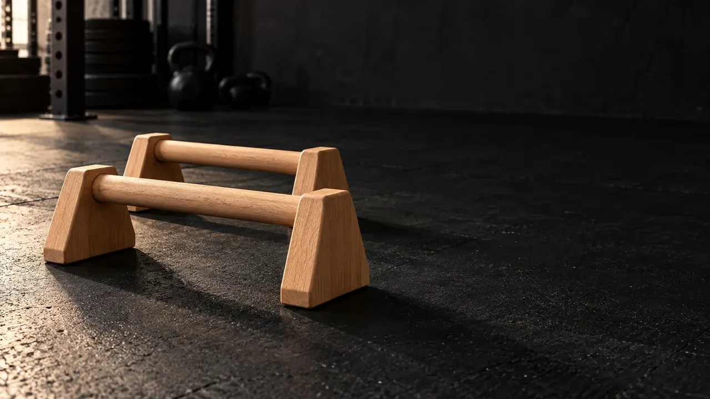

ما الفرق بين الباراليتس والمتوازي؟
الباراليتس عادةً زوج قصير من المقابض القريبة من الأرض؛ تستطيع حملها أو وضعها على سطح ثابت لتدريبات الضغط، وضعيات الدعم، ورفع الرجلين. المتوازي المرتفع أو ديب بار أطول/أعلى لتمارين مثل الديبس؛ لا تفترض أن القطعتين متطابقتان لأن الاسم متشابه.

يمكن للمقبض أن يغيّر وضعية الرسغ في الضغط مقارنة بوضع الكف المسطحة على الأرض، لكن الراحة تختلف من شخص لآخر؛ لا تعتبره علاجًا لألم الرسغ.
تمارين يمكن أداؤها على الباراليتس
- ضغط مائل أو ضغط باراليتس: ضع الزوج على سطح مستوٍ غير زلق، شد الجذع، وانزل فقط بمدى تتحكم فيه. إذا كنت مبتدئًا، ابدأ بضغط على سطح مرتفع أو من الركبتين.
- دعم ثابت: امسك المقابض وارفع بعض أو كل وزن الجسم لثوانٍ حسب قدرتك، مع كتفين ثابتين.
- Tuck hold ثم L-sit: ابدأ والركبتان مثنيتان والقدمان قريبتان من الأرض؛ زد مدة الثبات، ثم مدّ رجلًا واحدة قبل محاولة مدّ الرجلين.
- Pike push-up: ارفع الوركين واعمل على قوة الدفع عموديًا بالتدريج، مع تحكم في الكتفين.
- Handstand أو planche: مهارات متقدمة تتطلب إعدادًا للقوة والتوازن ومساحة تدريب مناسبة، وقد تحتاج إشراف مدرب. لا تبدأ بمحاولات حرة عالية المخاطرة.
افحص ثبات المقابض وعدم انزلاقها قبل وضع وزن جسمك عليها؛ توقف إذا شعرت بألم حاد في الرسغ أو الكتف.
كيف تختلف التمارين بحسب المستوى؟
| مستواك الحالي | تمرين بداية مقترح | مثال للحجم | انتقل عندما... |
|---|---|---|---|
| مبتدئ | ضغط مائل/مدعوم + دعم بمساعدة القدمين | 2 × 4–8 ضغط، 2 × 10–15 ثانية دعم | تتحكم في الحركة ولا تفقد التوازن |
| متوسط | ضغط كامل + ثبات tuck | 2–3 × 5–10 ضغط، 2–3 × 10–20 ثانية ثبات | تحافظ على كتفين وجذع ثابتين |
| متقدم | تدرّج L-sit أو pike أعمق ومهارات اتزان تحت تحكم | اضبط المجموعات والمدة بحسب جودة الحركة | تتقدم دون ألم وبإعداد يناسب مهارتك |
هذه أمثلة تعليمية، وليست معايير ثابتة للحكم على مستواك. يمكنك الجمع بين تمرين مبتدئ وآخر متوسط في الجلسة نفسها.
كيف أختار باراليتس مناسبة؟
انظر إلى ثبات القاعدة، مقاس المقبض المناسب ليدك، مساحة الأرض، وارتفاع القطعة بالنسبة لتمرينك. لدى وثبة خيار حديد بمقبض خشب وخيار خشب كامل؛ راجع صفحة كل منتج للقياسات والتفاصيل الفعلية، واسأل عن الخيارات المتاحة قبل الشراء. لا يعني اسم المادة وحده أن أحد الخيارين أفضل لكل رياضي.
أسئلة شائعة عن الباراليتس
هل الباراليتس للمحترفين فقط؟
لا. المبتدئ يستطيع أداء ضغط مدعوم أو دعم جزئي، والمتقدم يمكنه التدرب على L-sit أو مهارات اتزان. درجة الحركة هي التي تتغير.
هل الباراليتس تعالج ألم الرسغ؟
لا يوجد ضمان لذلك. القبضة قد تكون أريح لبعض المتدربين لكنها لا تعالج إصابة؛ إذا استمر الألم اطلب تقييمًا مختصًا.
هل تصلح الباراليتس للديبس؟
يعتمد على ارتفاع القطعة وثباتها ومساحة الحركة والحمولة المعلنة. غالبًا يستخدم المتوازي المرتفع للديبس الكامل، بينما تخدم الباراليتس المنخفضة الضغط والدعم وL-sit.
المراجع وطريقة إعداد الدليل
أمثلة التدرّج التدريبي حررتها أكاديمية وثبة اعتمادًا على مبادئ الاستمرارية والتدرج في إرشادات ACSM الحديثة، ومع مراعاة أن وضعية الرسغ تتغير في حركات الضغط على المقابض بحسب دراسة حركية منشورة في PubMed. لا تفترض الدراسة أن الباراليتس تعالج ألمًا أو تمنع إصابة.